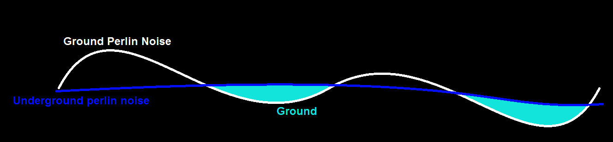

Cubie
!! Game may take a few seconds to load and hang on a grey screen for a bit. !!
Controls
- WASD - Rotate camera
- Hold left click and drag - Move camera focus point by pan
- Scroll Wheel - Zoom
- Q - Cycle through modes
- Build Mode
- Left click to build
- Right click to destroy
- Extend Mode
- Double click a block to select it
- Drag spheres outwards to bridge
- You must have enough blocks in your inventory to build
- People Mode
- Click a claimed person to toggle their selected state
- Click somewhere for all people in your selection group to add that location as a target.
- Click an unclaimed person as a target, and have a claimed person walk over to them to claim them.
- Build Mode
- E - Open inventory
- Double click an item in inventory to equip it (Must be in build mode)
- Double click a crafting recipe in inventory to craft (Build mode)
This game was made for the first Brackeys 2021 Game Jam in just under a week. I wanted to undertake procedural terrain and mesh generation as I was inspired by other people's projects of which were inspired by Minecraft. Up until this point my exposure to actually making terrain and mesh generation was extremely limited and thought it'd be a fun project to undertake.
The general loose "aim" of the game is to recruit more people by bridging across to them and building a town. Like an RTS mixed with Minecraft.
Throughout the project I learned many things, I found a lot of enjoyment from learning about Perlin noise functions and using them to make a generation system to produce floating islands. The islands are generated by having a ground noise function that is subtracted from an underground noise function to produce island-like structures.

I also learned how mesh generation works, producing lists and arrays of vertices and triangles procedurally to make chunks.
If i could improve and make changes to the game today, I'd implement multithreading for the mesh generation in order to make the chunk generation not lag the game so much.